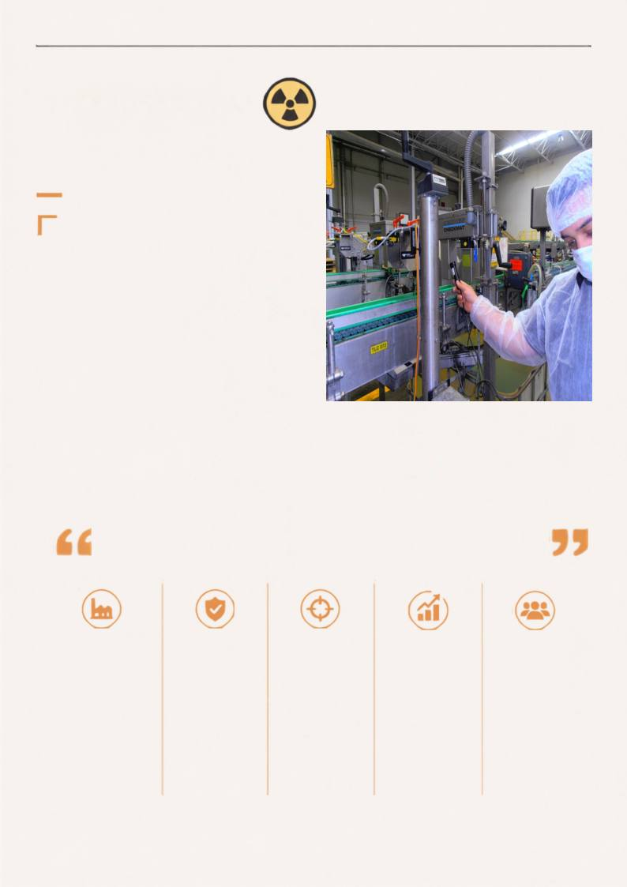

A RADIOLOGIA INDUSTRIAL É MAIS QUE UMA APLICAÇÃO TÉCNICA. É COMPROMISSO COM
A QUALIDADE, COM A VIDA E COM O DESENVOLVIMENTO SUSTENTÁVEL DA INDÚSTRIA.
A evolução tecnológica: mais precisão e
agilidade
RADIOLOGIA
INDUSTRIAL
Precisão que revela o que os olhos não veem.
A evolução tecnológica resulta no desenvolvmento de
novos equipamentos, sistemas mais automatizados e
soluções cada vez mais integradas aos processos
industriais.
Esse
crescimento
também
traz
uma
responsabilidade importante: a necessidade de
profissionais cada vez mais qualificados. Não basta
conhecer o funcionamento de um equipamento ou
executar um procedimento. É preciso compreender
os princípios envolvidos, reconhecer os riscos,
conhecer os requisitos de radioproteção e saber
tomar decisões diante das diferentes situações
encontradas no ambiente de trabalho. É nesse
contexto
que
a
educação
continuada
ganha
importância fundamental. Na Radiologia Industrial,
o aprendizado não termina com um curso ou com a
conquista de um certificado.
Normas
são
atualizadas,
equipamentos
são
aprimorados, novas tecnologias surgem e o mercado
passa a exigir competências diferentes. Manter-se em
constante aprendizado é essencial para acompanhar
uma área que não para de evoluir.
Radiografia Industrial,
Medidores Nucleares,
Irradiadores de Grande
Porte, Aceleradores Lineares,
controle de processos e
outras tecnologias que
utilizam radiações ionizantes.
Planejamento, avaliação
de riscos, monitorização,
controle de fontes e
equipamentos e gestão
da segurança em cada
aplicação.
TECNOLOGIAS E
APLICAÇÕES
INDÚSTRIAS E
SEGMENTOS
Mineração, petróleo e
gás, energia,
petroquímica, pesquisa,
desenvolvimento e
diferentes setores
industriais que utilizam
essas tecnologias em seus
processos.
TRANSPORTE E
ASSESSORIA
ESPECIALIZADA
Atividades que exigem
conhecimento técnico
próprio, incluindo
transporte de materiais
radioativos, consultorias,
assessorias e suporte
especializado às
instalações e processos.
Uma área multidisciplinar
e em constante
transformação, que exige
capacitação contínua e
profissionais capazes de
compreender diferentes
tecnologias, processos e
responsabilidades.
Radiologia Industrial não
é apenas Radiografia
Industrial.
E também não deve ser
compreendida com a
mesma lógica da
Radiologia Médica.
SEGURANÇA E PROTEÇÃO
RADIOLÓGICA
PROFISSIONAL E
MERCADO DE TRABALHO
PERSPECTIVAS DE MERCADO
RADIOLOGIA INDUSTRIAL
ALÉM DA IMAGEM · CORED-SP · CRTR-SP
22